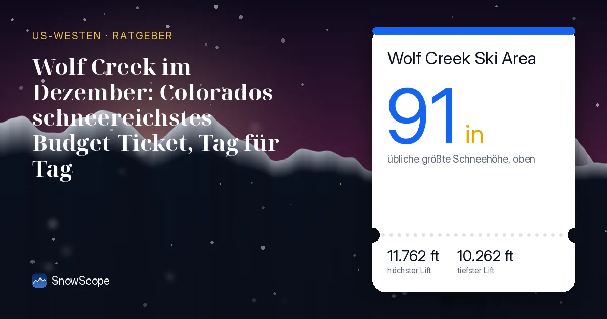

Wolf Creek im Dezember: Colorados schneereichstes Budget-Ticket, Tag für Tag
Das Skigebiet Wolf Creek liegt hoch auf der Continental Divide zwischen Pagosa Springs und South Fork. Es verlangt das ganze Jahr über einen einheitlichen Preis, veröffentlicht die Tarife im Voraus und bietet Mitte Dezember den tiefsten Schnee von drei überprüften Colorados Gebieten. Hier siehst du, wie ein typischer Dezember in jeder Höhenlage aussieht und wann du buchen solltest, um Spitzenpreise zu vermeiden.
Die Live-Schneeprognose für Wolf Creek Ski Area in der SnowScope-AppSchneehöhen, Pulverschnee-Alarme und 3D-Karte, gratis.
Drei Höhenlagen, drei Schneegeschichten
Wolf Creek erstreckt sich von 3.128 m an der Talstation bis zu 3.585 m an der Bergstation mit 11 Liftanlagen und etwa 50 km Pisten. Die Schneemächtigkeit ändert sich mit der Höhenlage. Am typischen 15. Dezember hat die Talstation 74 cm, die Mitteltstation auf 3.356 m 87 cm und die Bergstation 92 cm. Bis zum Silvesterabend steigt die Mitteltstation auf 118 cm und die Bergstation auf 127 cm an.
Die Zuverlässigkeit ist hoch, aber nicht perfekt. Am 15. Dezember haben 72 % der Winter mindestens 50 cm in der Mitteltstation. Schneereich-Wochen, definiert als wöchentlicher Mittelwert von 50 cm oder mehr, treten in der ersten Dezemberwoche in 59 % der Winter auf, aber in der Weihnachtswoche in 78 % der Winter. Wenn Stürme die San-Juan-Berge umgehen, spürt dies der ganze Pass: Ein schwacher Dezember, einer von zehn, kann am 15. nur 12 cm haben.

Wann du fahren solltest und was es kostet
Wolf Creeks Skikartenpreise für 2026-27 sind fest und gedruckt: 96 € an regulären Tagen, 110 € an Spitzentagen. Im Dezember sind Spitzentage vom 20. bis 23. Dezember und vom 26. bis 31. Dezember. Das bedeutet, du sparst 14 € pro Karte, wenn du vor dem 20. Dezember fährst oder am Heiligabend oder Weihnachtstag.
Mehrtagestickets bieten besseren Wert für längere Aufenthalte. Eine 2-Tages-Karte kostet 192 € an regulären Tagen oder 220 € an Spitzentagen. Eine 3-Tages-Karte kostet 285 € oder 327 €. Der günstigste Dezember ist daher alles vor dem 20., plus die zwei Tage an Weihnachten selbst.

Vergleich: Loveland und Ski Cooper
Loveland an der I-70 westlich von Denver bietet Anfangssaisontickets für 60 € online bis zum 13. Dezember, dann 159 € am Schalter ab dem 14. Dezember. Seine Mitteltstation hatte am typischen 15. Dezember 74 cm, mit 67 % der Winter über 50 cm. Ski Cooper bei Leadville ist das Wochentag-Schnäppchen bei 49 €, steigt auf 99 € an Wochenenden und Feiertagen, und hatte am typischen 15. Dezember 66 cm in der Mitteltstation, mit 70 % der Winter über 50 cm.
Wolf Creek ist nach unseren Zahlen die schneereichste der drei Gebiete in der Mitteltstation und die einzige mit einheitlichem Preis in der gesamten Saison. Es liegt höher und weiter entfernt von Denver: Du bezahlst mehr Fahrtzeit, aber dafür weniger Menschen und tieferen Schnee.
Der Dezember war in früheren Wintern wärmer
Anfang Dezember war früher tiefer. In den ersten 15 Wintern unserer Aufzeichnung hatte die Mitteltstation am typischen 15. Dezember 140 cm. In den letzten 15 Wintern fiel das auf 60 cm, und der Anteil der Winter über 50 cm sank von 87 % auf 67 %. Letzter Winter war an diesem Datum sehr schwach: nur 23 cm.
Der Trend ist klar, aber nicht absolut. Mitteldezember und später im Monat halten sich noch gut. Am 25. Dezember beträgt die typische Mächtigkeit 107 cm in der Mitteltstation, und am Silvesterabend erreicht sie 118 cm. Die beste Woche in einem typischen Winter ist die letzte Woche des Jahres, mit Mächtigkeiten um 46 bis 50 cm in Mittel- und Bergstation.
Was du vor deiner Fahrt wissen solltest
Wolf Creek Pass (US-160) ist hoch, steil und unerbittlich. Winterfahrten erfordern Ketten oder Allradantrieb und Wetterkenntnis. Schau die Website des Colorado Department of Transportation an, bevor du losfährst. Der Pass wird bei starkem Schneefall gelegentlich gesperrt, und die Bedingungen können sich schnell ändern.
Es gibt keine Unterkunft am Berg. Die nächsten Ortschaften sind Pagosa Springs (40 km südlich) und South Fork (24 km nördlich). Die meisten Besucher fahren tagsüber rauf. Bei über 3.000 m Höhenlage solltest du am ersten Tag langsam machen und viel Wasser trinken, um dich an die Höhe anzupassen. Frühjahrsschnee kann dünn sein; Felsen können unter flacher Auflage nah beieinander liegen.
Tipps für Skifahrer
- Fahr vor dem 20. Dezember, um den regulären Preis von 96 € statt 110 € zu sichern.
- Buche eine 2- oder 3-Tages-Karte, wenn du kannst; die Kosten pro Tag fallen auf 96 € oder 95 € pro Tag an regulären Tagen, was Einzelticketpreisen entspricht oder diese schlägt.
- Plane für die Mitteltstation auf 3.356 m oder höher; die Talstation auf 3.128 m kann Anfang der Saison dünn sein.
- Nimm Ketten mit oder nutze Allradantrieb; schau CDOT-Bedingungen und Fahrbahnstatus, bevor du Wolf Creek Pass fährst.
- Nimm den ersten Tag gemütlich in dieser Höhenlage; trinke Wasser und vermeide Überanstrengung, um dich an über 3.000 m anzupassen.
Zu diesen Zahlen
Die Schneehöhen der Skigebiete sind der meiste Schnee in den oberen Hängen am angegebenen Tag; es sind Schätzungen für eine Fläche, keine Messung an einem Punkt. Prognosen können sich ändern. Lies vor dem Freeriden immer den offiziellen Lawinenlagebericht.
Offizielle Lawinenlageberichte: Colorado Avalanche Information Center
Diesen Bericht zitieren
Für Forschung, Lehre oder Presse: Zahlen und Grafiken sind unter CC BY 4.0 mit dieser Quellenangabe frei nutzbar.
SnowScope (2026), Wolf Creek im Dezember: Colorados schneereichstes Budget-Ticket, Tag für Tag, https://snowscope.app/blog/de/2026/11/wolf-creek-colorado-december-skiing-value.html, abgerufen am 2026-11-14
SnowScope (Atlas Labs). (2026, November 14). Wolf Creek im Dezember: Colorados schneereichstes Budget-Ticket, Tag für Tag. SnowScope snow reports. https://snowscope.app/blog/de/2026/11/wolf-creek-colorado-december-skiing-value.html
BibTeX
@misc{snowscope2026wolfcreekcoloradodecembe,
author = {{SnowScope (Atlas Labs)}},
title = {Wolf Creek im Dezember: Colorados schneereichstes Budget-Ticket, Tag für Tag},
year = {2026},
month = nov,
howpublished = {\url{https://snowscope.app/blog/de/2026/11/wolf-creek-colorado-december-skiing-value.html}},
note = {Published 2026-11-14 16:17 UTC; accessed 2026-11-14}
}· CC BY 4.0 · Methoden, Daten und Werkzeuge →
Wolf Creek Ski Area: Schnee und Temperatur nach Höhe, dieser Winter vs letzter (Werkzeuge) →
Wolf Creek Ski Area folgen
Gratis: eine Nachricht, wenn Neuschnee kommt, und jeden Morgen die Vorhersage.